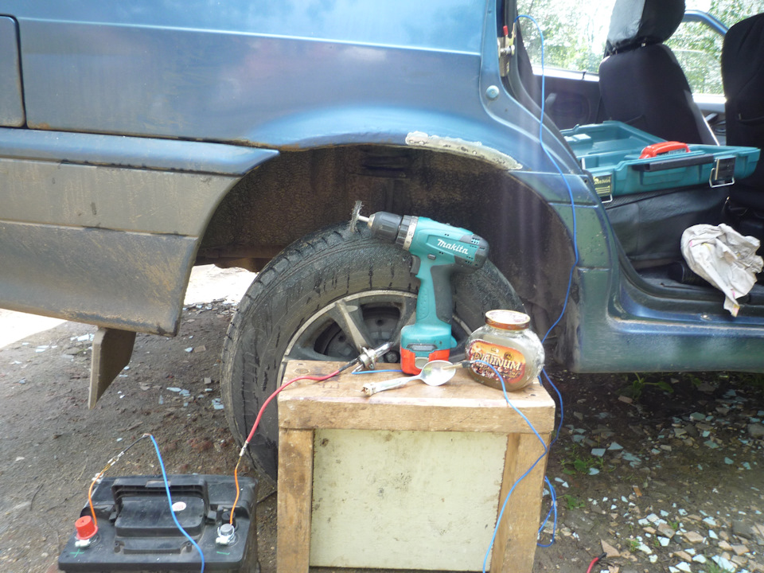

{kind=link}
{kind=link}
{kind=link}

До и после
Ранее красил я арки алкидныи грунами и красками. Передние арки были не очень ржавые.
Метал зачистить удалось идеально (без раковин). Красил из балончиков. Три года держится.
Проблем нет. А вот задние арки заржавели сильно. Зачистить идеально не удается.
Раковины с ржавчиной остаются. Под лупой их хорошо видно. Максимум через год
вспучивается краска. Цинкарь, преобразователь ржавчины особо не помогает.
Решил применить что то поэфективне. Для этого мне известны: реаактивные грунты,
эпоксидные грунты, цинкование.
Выбрал последнее -травление элктролизом с последующим цинкованием.
Не занималься этим. Поэкперемнтировал. В блоге www.drive2.ru/b/3044887/. Читателей у меня мало.
Тем не менее интерес к этой теме был отмечен. Тема в принципе известная, но редко метод используется.
Были вопросы. Решил поделится опытом с подробным описанием технологии и моего скромного опыта.
Достоинства этого (по моему мнению)
1-Дешево
2-Технология относительно несложная. Легко осуществить в гаражных условиях.
3-Надежно Если не поленится и вытравить все ржавчину, далее зацинковать — ржавчина не появляется
очень долго.
4-Цинковать можно в любую погоду. Дождь, влажно, пасмурно и тп. Зимой в морозы конечно не получится.
Недостатки
1- Трудоемко особенно для больших поверхностей. Трудоемко загрунтовать например весь
капот. Хотя и такое видел. Для небольших зон — то что надо.
2- Достаточно долго идет процесс травления ржавчины. Частично эту проблему решил
чередованием механической очистки и травлением.
Процес предполагает два этапа. 1 этап самый сложный -травление. 2 этап цинкование.
Электрическая схема одна и таже. Минус акумулятора через лампу соединяем на кузов
автомобиля. Минус на кузов. Плюс на электрод. Растворы, лампы и электроды разные для каждого этапа.
Вместо аккумулятора можно использовать зарядное устройство.
Лампу используем, во первых для предотвращения короткого замыкания. Во вторых для
ограничения тока. По яркости лампы также можно определять примерно величину тока.
При травлении ток чем больше тем быстрее. А вот при цинковании более 1 ампера ток не
желателен. Иначе цинк ложится быстро, хлопьями. Слой получается рыхлый.
Электроды обматываем тряпкой, так чтобы между кузовом и электродом не было КЗ.
Материалы
Материалы

Приготовились
Материалы для первого этапа травление кальцинированой содой.
Раствор: Кальцинированая сода. Продается во всех хозяйственных магазинах.
16 рублей 500 грамм Ложки на стакан воды хватает. Растворяется не очень хорошо.
Примерный расход 100 грам раствора на 5 квадраных сантиметров
Раствора больше мимо льется чем используется в реакции.
Видел на сайте, что в качестве раствора использовали "Крот".
Электрод: Нержавеющая сталь Я взял нержавеющую ложку. В принципе можно использовать
обычную сталь.
Лампа: Н4 50 W Максимальный расчетный ток 5 ампер. Можно в принципе взять что то помощней на 10 ампер
Процесс пойде быстрее.
Материалы для второго этапа цинкование
Раствор: Паяльная кислона. Продается там где продают паяльники. 50 мл 30 руб.
50 мл хватит по моему опыту на 10 кв см И даже больше. Смотря как лить.
Видел на сайте, что в качестве раствора используют цинкарь.
Можно использовать травленную цинком соляную или серную кислоту.
Лутше соляную.
Электрод: Цинк. Где взять? Я брал из старых использованых солевых батареек.
Как понять что батарейки солевая (Корпус цинковый)
==САМЫЙ ПРОСТОЙ СПОСОБ Солевая батарека (цинковый корпус) не магнитятся Проверить магнитои можно
==По обозначению на батарейке
Первая буква
Если "L", то перед вами щелочная батарейка,
если "S" — то серебряно-цинковая,
если "С" — то литиевая,
если этой буквы нет — то солевая.
Вторя буква (а может получится первая о буква)
"R" — обозначает цилиндрическую форму элемента,
"F" — плоскую.
Если перед буквенным обозначением стоит цифра, то она обозначает количество параллельно соединенных
элементов в батарее.
Например, 6F22 обозначает солевую батарейку типа "Крона", состоящую их шести 1,5-вольтовых элементов.
Число в конце строки обозначает размеры элемента, а конкретнее — его радиус.
==Температура плавления цинка 474 градуса Если отрезать стружку от корпуса батарейки
и нагреть зажигалкой -расплавится
==Цинк мягче стали Режется обычными канцелярскими ножницами
Лампа: Р21 Максимальный расчетный ток 1.75 ампер.
Далее описываю сами процесы травления и цинкования.
Очишаем механически краску и ржавчину.
Технология травления ржавчины
Макаем конец электрода с тряпкой (нержавеющую ложку) в растворе кальцинированой соде и водим
по кузову. Можно просто держать на одном месте. Можно бильевой прищепкой прижать к кузову и
только подливат на тряпку раствор.
ВАЖНО! Для ускорения процесса необходимо чередовать процесс травления и механической очистки
грязи (ржавчины и продуктов разложения ржавчины).
И так травим от 10 секунд до 1 минуты (Можно и больше)
Далее дрелью с диском-карчеикой механически затиреем протравленое место. До этого раствор с поверхности
не вытираем.
На поверхности появляется размазаная гряью. Ее стираем чистой тряпкой.
Повторяем этот процес. Обычно не более десяти раз. Смотря какая глубина раковин.
Эту грязь стираем тряпкой Далее все повторяем до тех пор пока такой грязи не будет
С каждым разом грязи становится все меньше и меньше. Когда эта гряз не появляется процесс заканчиваем.
Отсутсвие грязи говорит о том что либо ржавчину все сьело. Либо она так глубоко в раковинах что от
туда она не вымывается. В любом случае далее травить практически бесполезно.
В конце промываю струей воды все поверхность. Обеэжириваю.
Вытравленые микрораковины пол лупой
Технология цынкования
Подключаю лампу Р21
Беру электрод из цинка. Смачиваю трябку прямо из тюбика пяльной кислотой.
И вожу по поверхности. Важно! Останавливать на месте электрод не льзя. Иначе волосья тряпки
прилипают к поверхности. Цынкуется быстро. Около минуты на 1 кв см
Далее нетрализую кислоту раствором пишевой соды. Кисточкой намазываю. Шипит.
После смываю струей воды.
Все! Далее можно переходить к покраске.
Вид вытравленой арки
На фотке неворуженным взглядом все выглядит достаточно прилично, по сравнению с тем что было.
Но если под лупой посмотреть наиболе ржавое место справо видим что остались незацикованные раковины.
Остались всетаки не зацинкованные микро раковины Их не много Не считая сквозной дыры
Надо было мне потравить подольше. Лоханулся. Можно попробовать травить уже оцинкованную повержность.
Кальцинированая сода не трогает не железо не цинк.
Я понимаю что вариант безнадежный. Арку надо переваривать. Но для экперименов она подошла.
Через год или два переварю.
Я сейчас наверное просто реактивном грунтом покрою.
Другие примеры
Травил я багажник, местами. Жаль, фоток не делал. Были раковины глубже. Все вытравилось.
Там сквозных дыр не было. Только поверхность заржавела. Можно поверить на слово.
В процессе, во круг меня ходили любопытные. Одному любопытному, по его просьбе зацинковал
небольшое пятно на кузове. Грунтом и краской не покрывали. За месяц, а у нас дожди, ржавчина
не появилась. Но не занцинкованых раковон под лупой у него не было. Тщательней протравили.
Будут фотки других примеров. Догружу их.
2016-06-18 18:13 Двери кусок зацинковал. Покрыл реактивным грунтом
Дверь
На этот раз вытравиль хорошо
Крупным планом полсле вытравления Ржавчины в раковинах пркатически нет Травил 30 минут
{kind=link}
{kind=link}
{kind=link}
{kind=link}
{kind=link}
{kind=link}